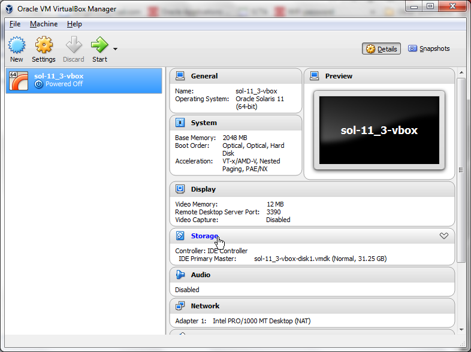

IPS Lab Preparation
Repository installation
Note
You don't have to perform this lab, if you have access to the
online repository at oracle.com. To test that, type:
pkg list -a | wc -l. If the output shows some large number (more
than 3500) then you have access to the full Solaris repository and can
skip this step. Even in this case you can choose to perform this
exercise for training purposes.
Before we started working with IPS we have to install a repository into our Oracle Solaris instance. It's a preparatory exercise, but you may use the same commands to install an internal repository in your network. For this lab we have created a small repository, just big enough to perform our lab exercises. In real life you will download and install the full repository from oracle.com. With a proper support contract from Oracle you will get access to the support repository and be able to update your local repository periodically.
Open the USB stick provided by your instructor, or the local folder
where you have copied all the files to. There is a file called
repo.iso. We have to add it as a virtual DVD to the lab virtual
machine. First, shutdown the Solaris instance in the VM. Then go to the
Lab VM's settings and click on Storage.

Then click on Add optical drive icon:

And on the next dialog click on Choose disk:

Then find the repo.iso file in your file system and add it to the
virtual machine.

After this is done, start the virtual machine the usual way. After you
logged in as lab, check if you see the mounted CD-ROM on your desktop.

If everything is OK, open the terminal, become root and configure the repository. Start with creating a separate ZFS file system for that.
root@solarislab:~# zfs create -o mountpoint=/repo -o compress=on rpool/repo
Check if you have your repository on that CDROM file:
root@solarislab:~# ls /media/CDROM pkg5.repository publisher
Copy all the files from the repository to the new file system:
root@solarislab:~# rsync -aP /media/CDROM/* /repo
And then update the repository index and configure the IPS server:
root@solarislab:~# pkgrepo rebuild -s /repo root@solarislab:~# svccfg -s application/pkg/server setprop pkg/inst_root=/repo root@solarislab:~# svcadm refresh application/pkg/server root@solarislab:~# svcadm enable application/pkg/server root@solarislab:~# pkg set-publisher -G '*' -M '*' -g http://10.0.2.15/ solaris
Check available packages. There should be about 900 of then (as we said, it's a small repository). If you see something significantly different, discuss it with your instructor and decide on how to move ahead.
root@solarislab:~# pkg list -a | wc 977 2932 79174
Well, now the system is ready for the IPS and Virtualization labs.